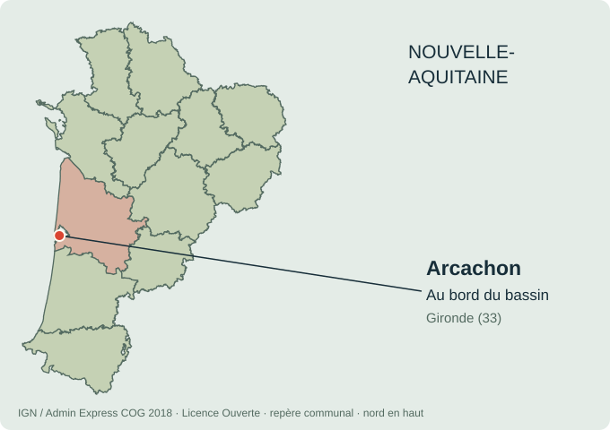
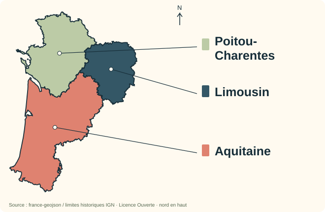
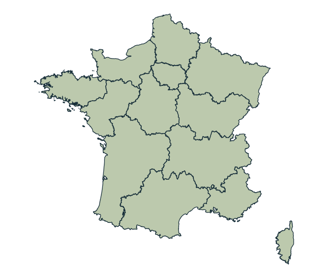
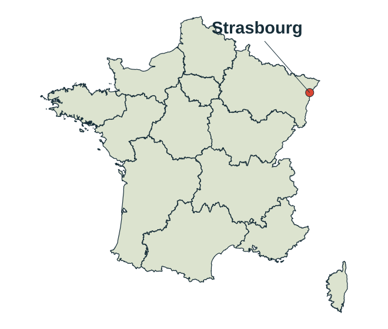

Deux équipes, six manches
Jouez en équipe ou tous ensemble selon le défi.


AVANT DE TOURNER LA CLÉ
Formez deux équipes, choisissez un nom et préparez-vous à relever les défis !
Jouez en équipe ou tous ensemble selon le défi.
Les bonnes réponses rapportent des points. Plus vous utilisez d'indices, moins vous en gagnez.
Tentez votre chance ou défiez l'autre équipe. Un seul Plat piégé entre deux défis.
Notez vos réponses. Le formateur les enregistre et le jeu calcule les points.
À l’origine, les départements ont été numérotés principalement selon l’ordre alphabétique de leurs noms. Il existe aujourd’hui quelques exceptions liées aux évolutions administratives.

MANCHE 02 / NOUVELLE-AQUITAINE
Notre food truck poursuit sa route en Nouvelle-Aquitaine !
Trois spécialités à découvrir. Trois indices possibles. Plus vous trouvez tôt, plus vous gagnez de points !
Les indices sont dévoilés ensemble. Chaque équipe transmet sa réponse par écrit au formateur, sans l’annoncer à voix haute.
Chaque équipe a répondu ou a déjà trouvé. Le prochain indice peut être dévoilé.

BONUS FINAL / COLLECTIF / SANS POINTS

TROIS SPÉCIALITÉS DÉCOUVERTES
Le voyage continue. Avant de repartir, une pause avec les métiers de la cuisine !
Chaque équipe doit retrouver la région d'origine de cette spécialité. Plantez vos drapeaux !

MANCHE 4
Le GPS est complètement perdu ! Aidez notre food truck à retrouver les montagnes, les fleuves et sa prochaine destination.
Corail place, puis sauge place sans voir son choix. On compare ensuite les deux propositions avant de révéler la correction. 45 points maximum par équipe.
BONUS FINAL / COLLECTIF / SANS POINTS
TROIS REPÈRES RETROUVÉS
MANCHE 5
Retrouvez trois pays européens grâce aux indices, puis plantez vos drapeaux sur la carte d'Europe.
Pays : 20 / 15 / 10 points selon l’indice · Bonne localisation : +5 points
Un indice commun, des réponses discrètes sur papier. Le formateur valide séparément chaque équipe.
Écrivez votre réponse et transmettez-la discrètement au formateur.
LES DEUX RECHERCHES SONT TERMINÉES
Le pays est découvert. Reste à le retrouver sur la carte !
Plantez vos drapeaux en Europe ! Chaque équipe choisit un pays, puis valide son placement.
BONUS FINAL / COLLECTIF / SANS POINTS

TROIS DESTINATIONS EUROPÉENNES
Une pause avec les métiers de la restauration rapide avant la prochaine escale !
DERNIÈRE ESCALE
Retrouvez les continents où notre food truck doit effectuer ses livraisons. Placez vos drapeaux sur la carte du monde !
6 défis × 10 points = 60 points maximum par équipe.
Corail choisit, puis sauge choisit sans voir le premier drapeau. Le formateur révèle ensuite la destination.
SIX DÉFIS, UNE DERNIÈRE ESCALE
DERNIÈRE ESCALE TERMINÉE
Vos scores sont conservés. Retrouvez votre parcours dans le carnet de route.
ENTRE DEUX DÉFIS
Un seul piment peut être joué avant de reprendre la route. Vous pouvez aussi continuer sans en utiliser.
COMMANDES DU FORMATEUR
PLAT PIÉGÉ !
PLAT PIÉGÉ ! / CORRECTION
Les autres propositions sont des distracteurs imaginés pour le jeu.
SCORES PROVISOIRES / AVANT LA CLÔTURE DU VOYAGE
Utilisez les piments conservés, ou choisissez de terminer. Si les deux équipes jouent, elles alternent leurs tours.
Ne pas utiliser ses propres piments n’empêche pas d’être défié : une équipe défiée doit répondre.
LE RETOUR AU BERCAIL / 01
Bon, on est partis pour livrer trois trucs à manger… On a traversé la planète, croisé des kangourous et failli finir au milieu des plastiques !
SIX MANCHES AU COMPTEUR / 02
Bilan du voyage : six manches, des kilomètres au compteur, des spécialités improbables… et un GPS que je vais définitivement mettre à la retraite !
LE GRAND VOYAGE GOURMAND / SCORES DÉFINITIFS
Égalité parfaite ! J'aurais dû prévoir deux volants dans le camion !
Le camion est entier, personne n'a mangé les pneus… Mission accomplie !
Bravo à vous deux ! Vous avez parcouru la France, l'Europe et le monde en découvrant des spécialités, des territoires et des métiers.
CONSULTATION / AUCUN POINT SUPPLÉMENTAIRE
Quelle affirmation est fausse ?
Une découverte pour tout le monde · Aucun point attribué · Aucun joker utilisé